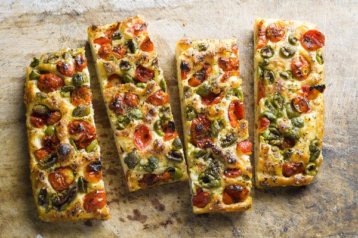

Tiramisu
This classic Italian dessert features layers of coffee-soaked ladyfingers and mascarpone cream, topped with cocoa powder.
Prep Time
30 minutes (plus 4 hours chilling)
Servings
6–8 people
Ingredients
- 6 egg yolks
- 3/4 cup sugar
- 2/3 cup milk
- 1 1/4 cups heavy cream
- 1/2 teaspoon vanilla extract
- 8 oz mascarpone cheese
- 24 ladyfingers
- 1 1/2 cups strong brewed coffee, cooled
- 2 tablespoons unsweetened cocoa powder
Instructions
- Whisk egg yolks and sugar in a saucepan. Stir in milk and cook over medium heat until thickened. Cool completely.
- Whip cream with vanilla until stiff. Fold in mascarpone and the cooled custard.
- Dip ladyfingers in coffee and place in a 9x13 dish. Spread half the cream mixture over them.
- Repeat with a second layer and top with remaining cream.
- Dust with cocoa powder. Chill at least 4 hours before serving.